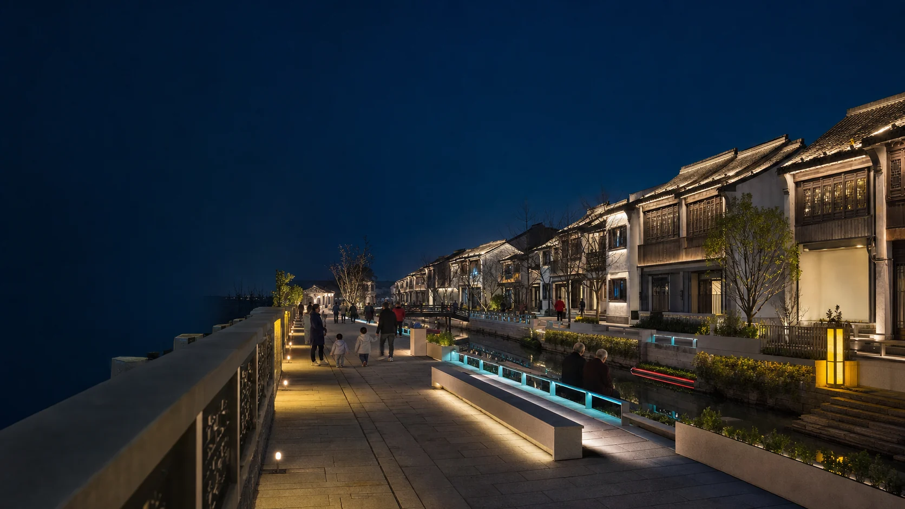
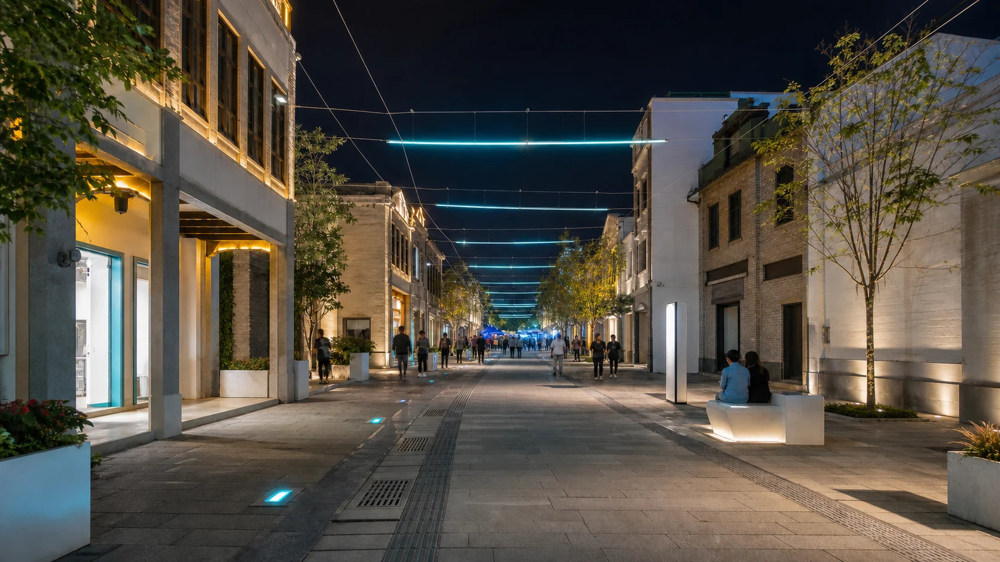

01 · WATERFRONT
古镇滨水更新
保留建筑与岸线的暗部层次，用低位照明、连续导视和少量重点节点组织慢行。
URBAN RENEWAL
从古镇滨水、商业街到公园广场，我们用安全照明、连续导视、公共艺术与可维护结构改善夜间步行和停留，而不是简单把整条街照亮。

城市更新首先处理人的日常使用：走路是否安全、店铺是否可见、居民是否受干扰、活动时是否有容量、设施坏了能否快速维修。艺术与灯光在这些条件成立之后建立记忆。
PUBLIC SPACE DIRECTIONS
以下图像为方案方向展示。历史街区、消防通道、结构连接、排水、居民影响和商铺运营均需在现场复核后深化。
保留建筑与岸线的暗部层次，用低位照明、连续导视和少量重点节点组织慢行。

协调店招、橱窗、外摆、树木和公共照明，减少相互竞争的亮度与杂乱设备。

沿街道节奏布置可分段实施的结构与光带，保持消防净空、店招视线和排水检修。
在入口、转角和活动广场布置可坐、可看、可举办小型活动的公共节点。
ALISN CANOPY SYSTEM
山水飘带天幕沿商业街纵向展开，以分叉钢柱、张拉索网和轻质穿孔表皮建立连续节奏。结构节点、检修口、配电箱和排水路径在概念阶段即可被看见。
PHASED RENEWAL
街区更新涉及商户、居民、交通、消防与长期维护。先选择最具代表性的入口或街段，实测照度、眩光、人流与运营反馈，再扩展标准和施工范围。
DELIVERABLES
服务范围根据规划阶段、施工条件、政府审批与运营主体分工书面确定。
夜间踏勘、亮度与暗区、慢行路线、节点使用和利益相关方梳理。
入口、导视、公共艺术、活动场地、天幕与夜景层级设计。
结构、基础、排水、供电、控制、灯具配光与检修组织。
样板段、预算拆分、施工界面、运营避让与效果复测。
START WITH THE STREET
请提供道路平面、街景照片、建筑与商户界面、消防通道、树木管线、开放时段、居民边界、预算与分期计划。我们先判断样板段应放在哪里。